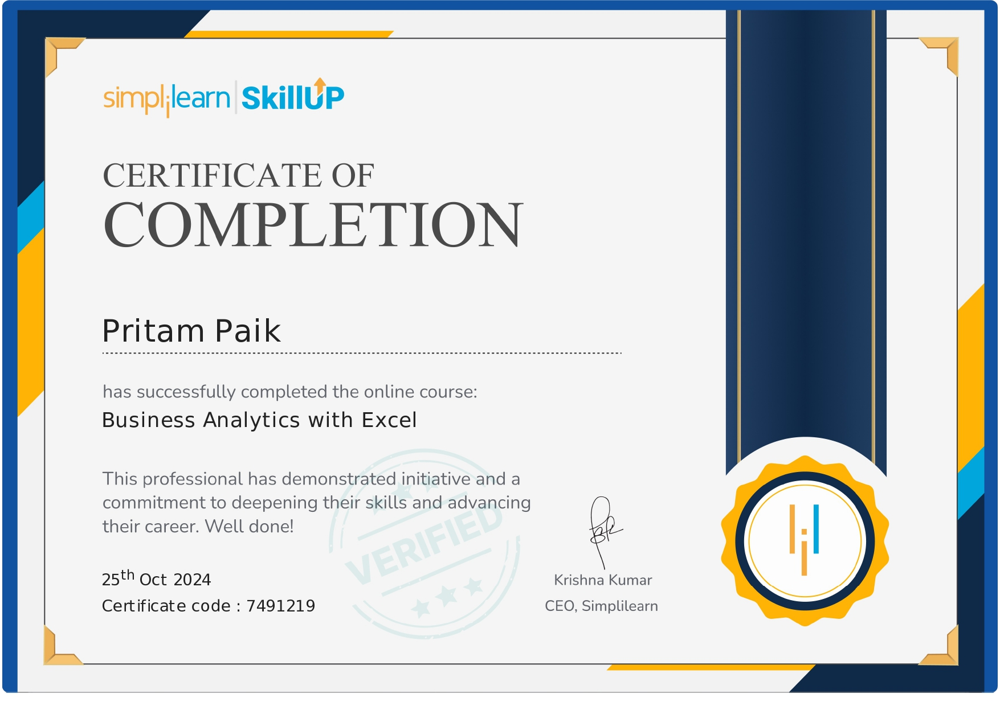
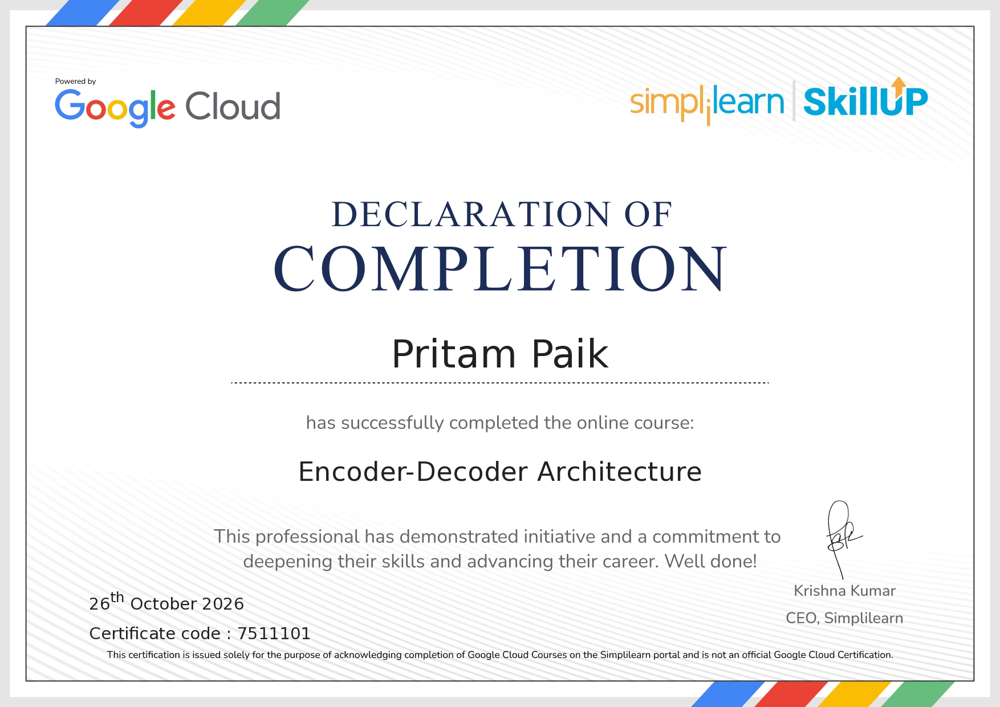
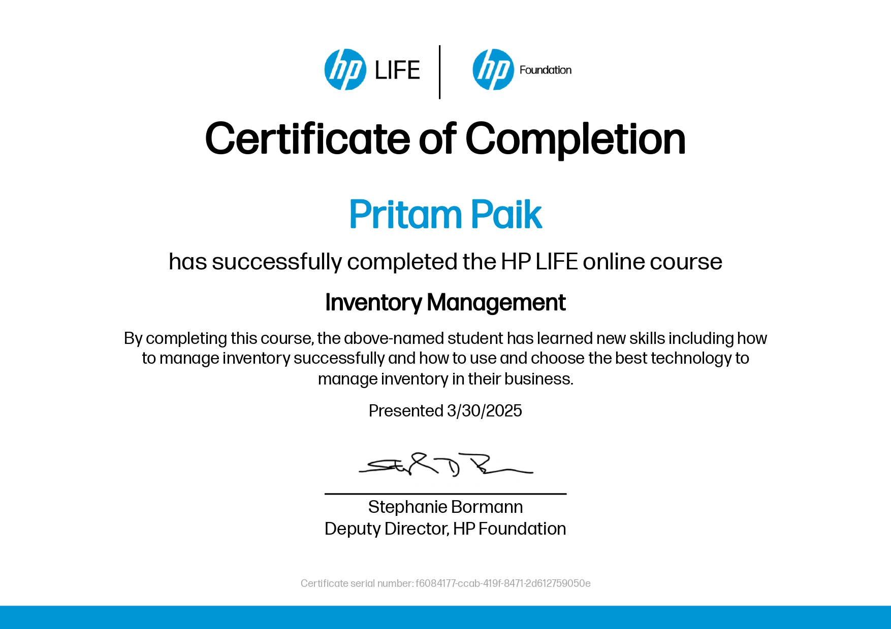
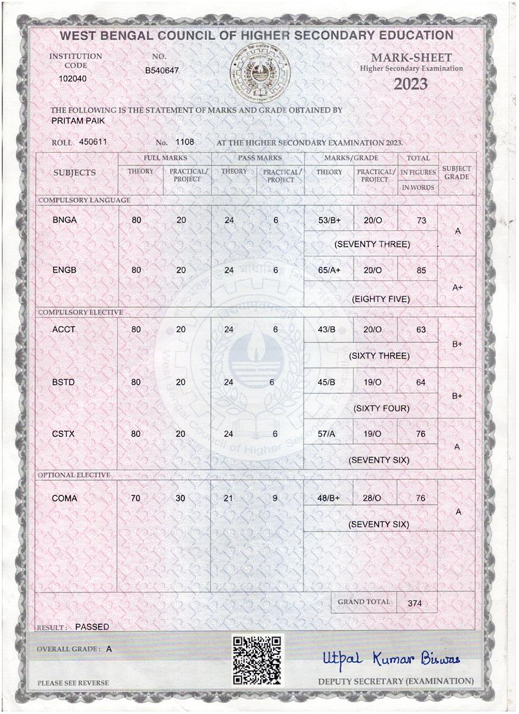
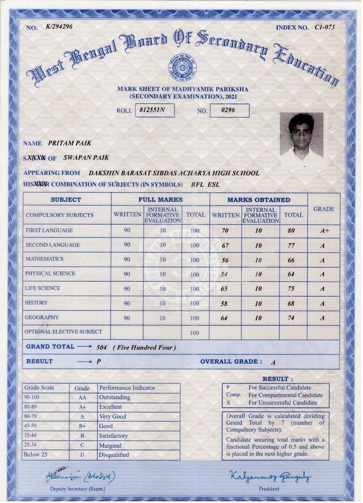

01
Tally Prime with GST
Accounting and bookkeeping workflows, voucher entries, ledger management, inventory records, GST-oriented transactions, and reports used to review business accounts.
An aspiring professional building a strong foundation in accounting, business analytics, and technology — one skill at a time.
Accounting · Analytics · Technology
01 / ABOUT ME
I’m currently pursuing a learning journey that connects commerce, accounting, data, and technology.
I’m developing practical skills in Tally Prime with GST, advanced Excel, Python, and SQL. I enjoy learning how tools and data can support better business decisions, accurate records, and efficient workflows.
✳ Personalise this paragraph in index.html inside the #about section.
“Learning today.
Building capability for tomorrow.”
02 / SKILLS
A detailed look at my current skill set and the areas I’m building confidence in.
Accounting and bookkeeping workflows, voucher entries, ledger management, inventory records, GST-oriented transactions, and reports used to review business accounts.
Excel formulas and functions, data cleaning, sorting and filtering, conditional formatting, charts, PivotTables, lookup functions, and structured reporting. Also familiar with everyday Word and PowerPoint workflows.
Programming fundamentals, variables and data types, conditions, loops, functions, collections, file handling, and introductory data analysis / machine-learning concepts as learning progresses.
Relational database basics, tables and relationships, SELECT queries, filtering, sorting, aggregate functions, GROUP BY, joins, and using queries to retrieve and summarise information.
Progress indicators are visual placeholders — adjust the percentages in index.html to reflect your actual proficiency.
03 / EDUCATION
Institute of Chartered Accountants of India (ICAI)
Manipal University
04 / CERTIFICATIONS
Certificate previews appear here when you add your JPG files to the certificates folder using the exact filenames listed below.

Certificate image: business-analytics-with-excel.jpg
Certificate image: machine-learning-with-python.jpg

Certificate image: encoder-decoder-networking.jpg
Certificate image: capm-ms-office.jpg

Certificate image: inventory-valuation-tally-gst.jpg

Certificate image: higher-secondary.jpg

Certificate image: secondary.jpg
05 / CONTACT
Have an opportunity, a project, or just want to say hello? Feel free to reach out.
pritampaikstudies2025@gmail.com ↗